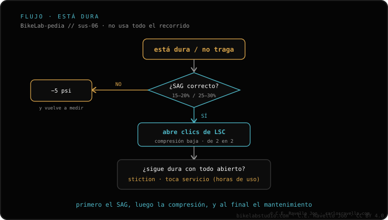

Si la horquilla no copia los baches pequeños y se siente dura, lo más común es exceso de presión de aire. Revisa en este orden: 1) comprueba el SAG (15-20% en horquilla); 2) si el SAG es alto, baja presión de 5 en 5 psi hasta que copie los baches pequeños sin perder soporte; 3) abre clics de compresión en baja (LSC). Si con el SAG correcto sigue dura, sospecha fricción estática o demasiados tokens. Si en cambio se va al fondo en golpes grandes, eso es lo contrario y se ataca distinto.
Antes de tocar nada por dentro, casi siempre es presión. Empieza por el SAG: es la medida que te dice si vas sobrado.
El orden, de lo simple a lo de servicio
1 · Comprueba el SAG — Con tu equipo de rodar, mide el hundimiento en reposo: en horquilla, busca un 15-20% del recorrido. Si el SAG es muy bajo, vas con exceso de presión y por eso no copia los baches pequeños.
2 · Baja presión de 5 en 5 psi — Si el SAG sale alto (poco hundimiento), quita 5 psi, prueba, y repite hasta que la horquilla copie los baches pequeños sin que pierda soporte ni se hunda de más. Ve en pasos cortos, no de golpe.
3 · Abre la compresión en baja (LSC) — Si la tienes cerrada de más, endurece el tacto en baches pequeños. Ábrela en clics y prueba en el mismo tramo de siempre. La cantidad final la decides tú según terreno y gusto.
4 · Si con SAG correcto sigue dura — Sospecha fricción estática: retenes secos o muchas horas de servicio aumentan el rozamiento inicial. También revisa si tienes demasiados tokens, que endurecen el final y restan progresividad. Aquí toca servicio de retenes o ajustar el número de tokens.

El flujo: del SAG y la presión a la compresión, y solo al final a la fricción o los tokens.
Error común: abrir toda la compresión o sacar tokens sin haber mirado primero el SAG. Si vas con exceso de presión, ningún ajuste de clics lo va a tapar: la horquilla seguirá sin copiar los baches pequeños.
¿Sigue dura con el SAG correcto?
Cuéntanos el modelo de horquilla, tu peso y qué presión llevas y te orientamos sobre qué revisar antes de abrir nada. Escríbenos por WhatsApp
Preguntas frecuentes
¿Por qué se siente tan dura en baches pequeños?
Casi siempre exceso de presión: la horquilla no copia el terreno. Comprueba el SAG (15-20%) y, si es alto, baja presión de 5 en 5 psi.
¿Qué reviso después de la presión?
Abre clics de compresión en baja (LSC) en pasos y prueba. Cuánto abrir lo decides tú según el terreno.
¿Y si con SAG correcto sigue dura?
Sospecha fricción estática (retenes secos / horas de servicio) o demasiados tokens. Toca servicio de retenes o ajustar tokens.